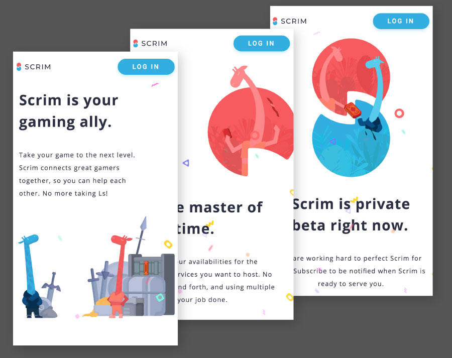

I'm intrigued by how humans use the things around them;
and how they could be made better
Loves
Coffee (Aeropress or siphon)
Motorcycles
Dogs
Formerly
Professor
Photographer
Painter
Random
2 granted patents
TIG welder
Uses Sennheisers
Hey, maybe we should chat
Send me an email at hello@thoughtbubble.ca
Stop Signs Survey App
UX Case Study
tldr; UI improvements were able to cut a project’s time in half.
Initially, the interface placed fields in an arbitrary order according to the spreadsheet they will eventually populate. After observing users in the field, it became evident that the mental workflow did not match the field ordering. eg. the type of support is obvious from a far during an approach, yet this field was near to the end of the form.
Initial UI field ordering
First improvements to change just the field ordering made the users more efficient and created fewer missed touches as they no longer had to scroll back and forth in the form.
Throughput increased from a baseline of 26.4 signs / hour to 42.62 / hour. An increase of 61.4%.
The next set of improvements focused on collecting information in a ganged format to reduce redundant input. Notably, there are often several signs on a single sign pole (two street signs, an octagon stop sign, rectangular “All-way” card, rectangular black & white obstacle cards) where each entry would contain duplicate information regarding support type, GPS coordinates, intersection, etc.
The fields were again re-ordered to more closely match the mental model of data collection by the users. As well, they were given instructions to record each support as a single entry, and combine the information for all signs into a single field, separated by a space.
I then wrote a simple script that took the exported .CSV file, processed through the fields to separate out each sign, and generate a final .CSV file to be used as the final deliverable.
This method increased the throughput to a massive 85.5 signs / hour.
The improvements culminated in the project time being cut in half. Due to the project being a fixed tender, this represented a massive cost savings.
Final Result
Project time cut in half
Curious how UX can be used to accelerate your project? Give me a shout: hello@thoughtbubble.ca
Studio Nostalgia Rebrand
Brand Redesign
Brief
Client wanted to a refresh of their identity and customer facing sites.
They looking for a bold, extremely distinctive visual identity to separate themselves from the competition and to create a memorable impression when pitching.
Logo
The were also to expand their business from strictly a graduation photography provider to a more media-based creative services. Using the node of retro elements present in their original identity, a set-top TV was selected as their new logo.
Typography
Brand Colours
Taking cues from the bold palete of streetware fashion, a black and cherry red were selected to provide high a contrast look with a very vibrant accent.
#000000
Black
0
0
0
0%
0%
0%
100%
#c40000
Cherry
196
0
0
16%
100%
100%
7%
Website Treatment
Taking cues from both modern and retro elements, a high-contrast treatment was selected.
Retro elements include lithographic treatment of hero image; bordered header panel; nods to art deco hairlines and shapes
Selected Process Work
Curious how UI can better communicate your brand values? Give me a shout: hello@thoughtbubble.ca
Joyride Prototype
CAD & Physical Model
A smart wifi bicycle lock
Device tracks unauthorized movement of the bike via an SMT accelerometer and relays positions via publically accessible wifi spots (eg. Starbucks, etc). It reports position to a webserver that then texts the owner and provides real-time tracking on an interactive, web viewable map.
Design is meant to hide-in-plain-sight to avoid detection and defeat by theives. Initial ideas of hiding it inside the handle bars or the seat stem were rejected due to radio interference issues that affected maximum range.
Form factor and dimensions were iterated on using sponge foam.
Initial prototype was 3d printed with a hollow cavity for the electronics.
An ABS bottleholder was added to complete the prototype
Curious how UX can shape future products? Give me a shout: hello@thoughtbubble.ca
Scrim
eSports Scheduling
A platform that allows professionals and other experts to make their service available to users looking for coaching, power levelling and other in-game services.
Front End
Angular 4
HTML
CSS (SASS)
Deployed on AWS EC2
Back End
NodeJS 4
AWS dynamoDB
AWS Cognito
Deployed on AWS Lambda

Selected Features
Mobile-first development.
Implemented using Angular Material and Flexbox
Schedule owners able to define availability windows based on a weekly schedule.
Timeslots are selectable on an infinite-roll into the future.
Users are searchable using an autocomplete system
Curious how to make ideas into an interactive reality? Give me a shout: hello@thoughtbubble.ca
Foodr
Food Sharing Platform
A way for home cooks to put their food for sale for others to discover and enjoy locally. Enabling small producers to find new customers, gain exposure, and grow their business.
Front End
.ERB HTML5
CSS3 (LESS)
jQuery
Back End
Ruby on Rails
ActiveRecord
MySQL
AWS S3
Deployed on Heroku
Selected Features
Front end implemented using Bootstrap grid and components for rapid development
Photo uploads stored on to AWS S3
Food creators able to open a store; populate with items; keep track of orders and order status.
Food eaters able to search via several criteria of food, username, shop name, etc.
Curious how to create new platforms people can use together? Give me a shout: hello@thoughtbubble.ca
Joyride
A Smart WiFi Bicycle Lock
Device tracks unauthorized movement of the bike via an SMT accelerometer and relays positions via publically accessible wifi spots (eg. Starbucks, etc). It reports position to a webserver that then texts the owner and provides real-time tracking on an interactive, web viewable map.
Front End
HTML5
jQuery
Back End
Ruby on Rails
Twillo
ActiveRecord
MySQL
Selected Features
Lock can be "locked" via the interface. If motion is sensed while locked, position alerts begin being tracked.
Uses Twillo API to send SMS with link to deep-linked website showing real-time position.
Position tracked and timestamped in an internal queue that is then sent to the server when WiFi is connected.
Historical positions can be saved to give a Journey.
Curious how to create new platforms people can use together? Give me a shout: hello@thoughtbubble.ca